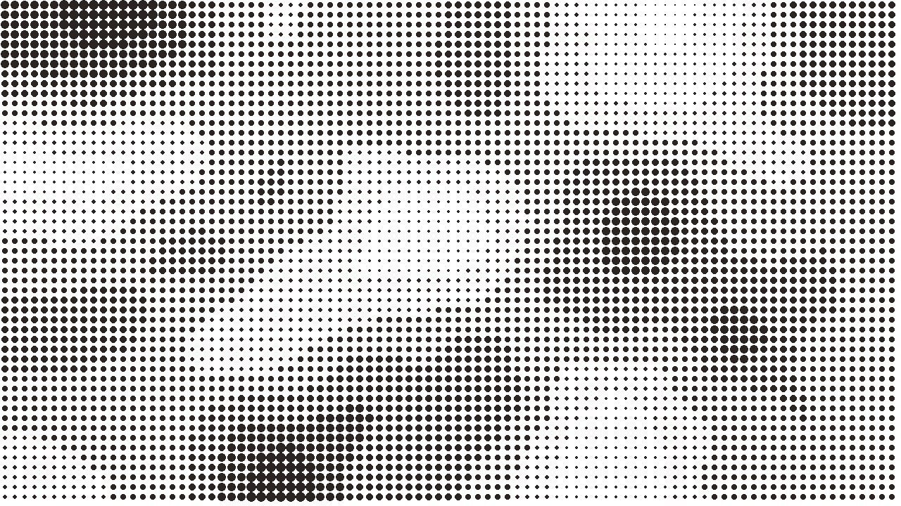
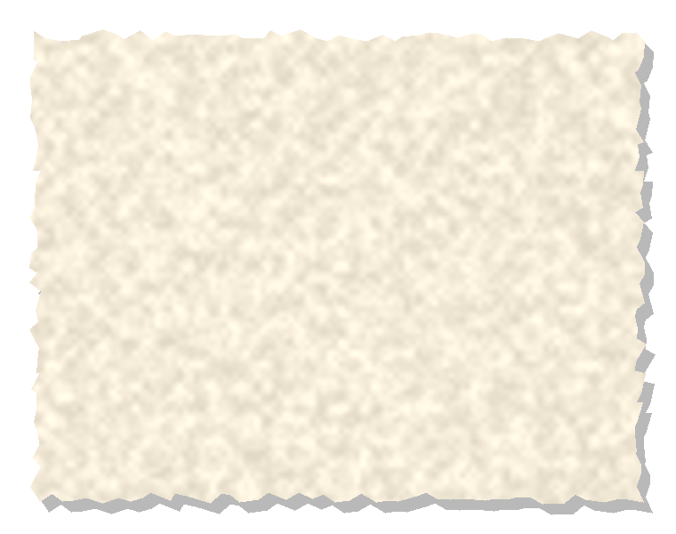
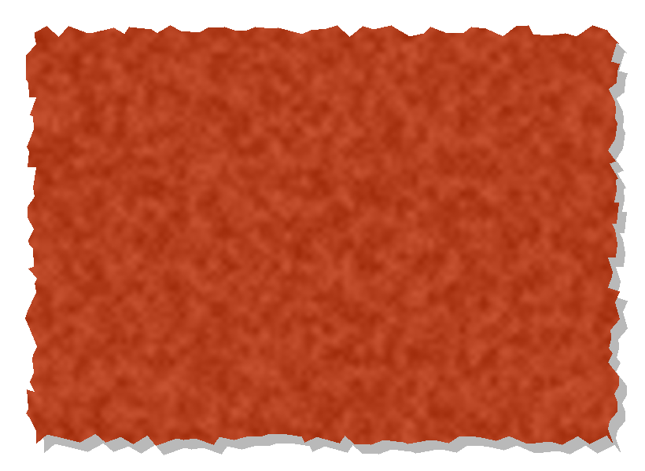
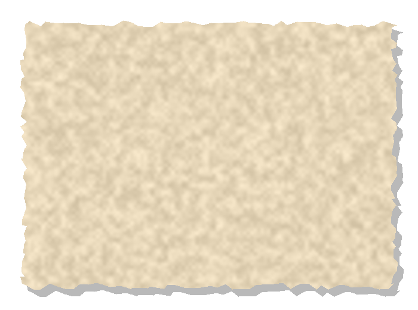

RIVER THAMES
PUDDING LANE
SUNDAY 2 SEPTEMBER 1666
just after midnight
1666
BAKERY
SUN 2
MON 3
TUE 4
WED 5
Wind drops.
Firebreaks hold.

0
houses destroyed
estimated 13,200 to 13,500
86 OR 87 PARISH CHURCHES
RUIN

?
How many died?
The traditional figure:
Historians disagree.
6
6
WOOD
BRICK + STONE
Christopher Wren
202 ft
THE FIRE THAT REBUILT LONDON